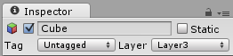

Layer-based collision detection
Layer-based collision detection is a way to make a GameObject collide with another GameObject that is set up to a specific Layer or Layers.

The image above shows six GameObjects (3 planes, 3 cubes) in the Scene view, and the Layer Collision Matrix in the window to the right. The Layer Collision Matrix defines which GameObjects can collide with which Layers.
In the example, the Layer Collision Matrix is set up so that only GameObjects that belong to the same layer can collide:
- Layer 1 is checked for Layer 1 only
- Layer 2 is checked for Layer 2 only
- Layer 3 is checked for Layer 3 only
Change this to suit your needs: if, for example, you want Layer 1 to collide with Layer 2 and 3, but not with Layer 1, find the row for Layer 1, then check the boxes for the Layer 2 and Layer 3 colums, and leave the Layer 1 column checkbox blank.
Setting up layer-based collision detection
- To select a Layer for your GameObjects to belong to, select the GameObject, navigate to the Inspector window, select the Layer dropdown at the top, and either choose a Layer or add a new Layer. Repeat for each GameObject until you have finished assigning your GameObjects to Layers. 
- In the Unity menu bar, go to Edit > Project Settings, then select the Physics category to open the Physics window.
- Select which layers on the Collision Matrix will interact with the other layers by checking them.